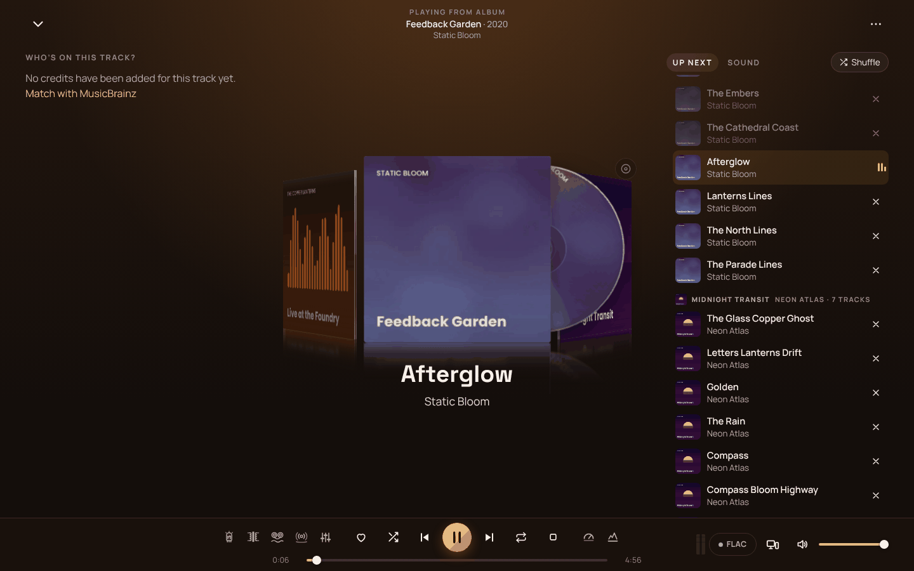

Deine Sammlung. Dein Server. Bitgenau.Your collection. Your server. Bit-perfect.
Amberwave macht aus deinem Musikordner eine Bibliothek, die sich wie ein Streamingdienst anfühlt, nur ohne Abo, ohne Algorithmus und ohne dass ein Byte deine Wohnung verlässt, das du nicht schicken willst. Zuhause hörst du die Originaldatei, unterwegs einen sauberen Stream, im Flieger das, was auf dem Handy liegt.Amberwave turns your music folder into a library that feels like a streaming service, without a subscription, without an algorithm, and without a single byte leaving your home that you didn't send. At home you hear the original file, on the go a clean stream, on the plane whatever is on your phone.
Public Beta Aktuell 0.9.1-beta.5 · kostenlos · Open Source (AGPL-3.0)Currently 0.9.1-beta.5 · free · open source (AGPL-3.0)
Sieht aus wie ein Streamingdienst. Gehört dir.Looks like a streaming service. Belongs to you.

Gebaut von einem, der Musik hortet, für alle, die es auch tun.Built by a music hoarder, for everyone who is one.
Deine Bibliothek, richtig sortiertYour library, properly sorted
Amberwave erkennt Alben über ihre Tags und am Klang, gleicht sie mit MusicBrainz ab und kennt Editionen, Mitwirkende und Künstlerbilder. Aufräumen und Tags schreiben geht nur nach deiner Freigabe, standardmäßig wird nur gelesen.Amberwave identifies albums by their tags and by sound, matches them with MusicBrainz and knows editions, credits and artist pictures. Tidying up and writing tags only happens after you approve it; by default it only reads.
Klang ohne KompromisseSound without compromise
Lückenlose Wiedergabe auf das Sample genau, Lautstärke-Angleich ohne Limiter und im Windows-Client die Originaldatei unverändert ans Interface, exklusiv über WASAPI oder ASIO, mit VST3-Plug-ins wenn du willst.Gapless playback to the sample, loudness levelling without a limiter, and in the Windows client the original file goes to your interface untouched, exclusive via WASAPI or ASIO, with VST3 plug-ins if you like.
Raumklang und EffekteSurround and effects
Space macht aus Stereo einen Raum, dazu Glow, Iron, Silk und ein parametrischer EQ, alles im Effektrack mit A/B-Vergleich.Space turns stereo into a room, plus Glow, Iron, Silk and a parametric EQ, all in the effects rack with A/B comparison.
Alles steuert allesEverything controls everything
Mit dem Handy den PC fernsteuern, mit dem PC den AV-Receiver. Geräte im Heimnetz spielen per DLNA, Denon, Marantz, Yamaha und Onkyo schaltet Amberwave selbst ein.Control the PC from your phone, the AV receiver from your PC. Devices in your home network play via DLNA; Amberwave turns on Denon, Marantz, Yamaha and Onkyo by itself.
Offline, wirklichOffline, for real
Alben und Playlists aufs Handy, als Datei im Speicher der App, bis zur Originalqualität. Ohne Netz startet die App direkt in deine Musik.Albums and playlists on your phone, as files in the app's storage, up to original quality. Without a network the app opens straight into your music.
Für die ganze FamilieFor the whole family
Eigene Konten mit eigenem Verlauf, eigenen Favoriten und Mein Radio, das mit der Zeit lernt, was jeder gern hört.Separate accounts with their own history, favourites and My Radio, which learns over time what everyone likes.
Sicher erreichbarSafely reachable
Unterwegs über einen Cloudflare-Tunnel ohne offene Ports, zuhause automatisch über den schnellen Direktweg mit eigenem Zertifikat.On the go via a Cloudflare tunnel without open ports, at home automatically over the fast direct route with its own certificate.
Umziehen in einem RutschMove in one go
Von Docker zu Windows oder zurück: ein verschlüsseltes Umzugspaket mit Bibliothek, Konten, Playlists und Verlauf.From Docker to Windows or back: one encrypted migration package with library, accounts, playlists and history.
Wo soll Amberwave laufen?Where should Amberwave run?
Der Server läuft dort, wo deine Musik liegt. Hören kannst du danach überall: im Browser, mit dem Windows-Client und mit der Android-App.The server runs where your music lives. After that you can listen anywhere: in the browser, with the Windows client and with the Android app.
Unraid
- In Apps (Community Applications) nach Amberwave suchen und installieren.In Apps (Community Applications) search for Amberwave and install.
- Musikordner und Appdata-Ordner wählen, optional gleich Benutzername und Passwort für den Admin.Pick your music and appdata folders, optionally a user name and password for the admin.
- WebUI öffnen, fertig. Der erste Scan läuft von selbst.Open the WebUI, done. The first scan starts by itself.
Docker
- All-in-One: ein Container mit Datenbank und Fernzugang, ideal für den Anfang.All-in-one: one container with database and remote access, ideal to start with.
- Pfade anpassen, starten, im Browser http://dein-server:9950 öffnen.Adjust the paths, start, open http://your-server:9950 in the browser.
- Lieber mit eigenem Datenbank-Container? Die Compose-Datei liegt im Repository.Prefer a separate database container? The Compose file is in the repository.
docker run -d --name amberwave --stop-timeout 60 -p 9950:80 \ -e ADMIN_BENUTZER=admin -e ADMIN_PASSWORT='choose-a-good-one' \ -v /path/to/appdata:/appdata -v /path/to/music:/musik \ ghcr.io/lfrank95/amberwave-aio:beta
Windows-ServerWindows server
- Installer laden und starten, Adminrechte brauchst du nicht.Download and run the installer, no admin rights needed.
- Musikordner wählen, Netzlaufwerke gehen auch.Pick your music folder, network drives work too.
- Im Browser einrichten. Amberwave sitzt danach im Infobereich neben der Uhr und holt sich Updates auf Nachfrage.Set up in the browser. Afterwards Amberwave sits in the notification area next to the clock and fetches updates on request.
Hören, wo du gerade bistListen wherever you are
Windows-ClientWindows client
- bitgenau über WASAPI exklusiv oder ASIO
- bit-perfect via WASAPI exclusive or ASIO
- Abtastrate folgt der Datei
- sample rate follows the file
- VST3-Plug-ins im Effektrack
- VST3 plug-ins in the effects rack
- findet den Server im Heimnetz selbst
- finds the server on your network by itself
Android-AppAndroid app
- Musik offline als Datei auf dem Handy
- music offline as files on your phone
- läuft im Hintergrund, Sperrbildschirm, Bluetooth-Tasten
- plays in the background, lock screen, Bluetooth buttons
- wechselt ohne Netz selbst in den Offline-Modus
- switches to offline mode by itself
- unterstützt Faltgeräte
- supports foldables
Browser
- läuft in jedem aktuellen Browser
- runs in any current browser
- als App installierbar, auch am iPhone
- installable as an app, iPhone too
- offline speichern bis Opus 256
- save offline up to Opus 256
- Raumklang und Effekte inklusive
- surround and effects included
Häufig gefragtFrequently asked
Was kostet Amberwave?What does Amberwave cost?
Nichts. Amberwave ist Open Source. Einige Funktionen wie ASIO, VST3 und die Effekte sind später als Pro-Funktionen geplant und während der Beta für alle frei.Nothing. Amberwave is open source. Some features such as ASIO, VST3 and the effects are planned as Pro features later and free for everyone during the beta.
Verändert Amberwave meine Dateien?Does Amberwave change my files?
Nein, solange du es nicht erlaubst. Neu eingerichtet liest Amberwave nur. Tags schreiben und Aufräumen schaltest du ausdrücklich frei, und jede Änderung siehst du vorher als Vorschau.Not unless you allow it. A fresh install only reads. Writing tags and tidying up have to be switched on explicitly, and you see every change as a preview first.
Brauche ich einen Cloudflare-Account?Do I need a Cloudflare account?
Nur für den Zugriff von unterwegs, und auch dann nur das kostenlose Konto. Zuhause läuft alles ohne. Wer schon Tailscale, WireGuard oder einen eigenen Reverse Proxy nutzt, nimmt einfach den.Only for access on the go, and then just the free account. At home everything works without it. If you already use Tailscale, WireGuard or your own reverse proxy, just use that.
Welche Formate spielt Amberwave?Which formats does Amberwave play?
FLAC, ALAC, WAV, AIFF, MP3, AAC, Ogg Vorbis, Opus, WavPack, APE und DSD. Was ein Gerät nicht selbst abspielen kann, wandelt der Server unterwegs passend um.FLAC, ALAC, WAV, AIFF, MP3, AAC, Ogg Vorbis, Opus, WavPack, APE and DSD. Whatever a device can't play itself, the server converts on the fly.
Sammelt Amberwave Daten über mich?Does Amberwave collect data about me?
Nein. Es gibt keine Telemetrie und kein Konto bei uns. Amberwave fragt nur die Dienste, die du einschaltest, etwa MusicBrainz für Albumangaben.No. There is no telemetry and no account with us. Amberwave only asks the services you switch on, such as MusicBrainz for album details.